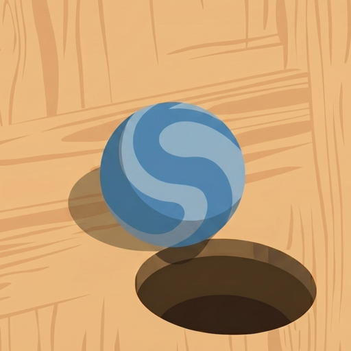
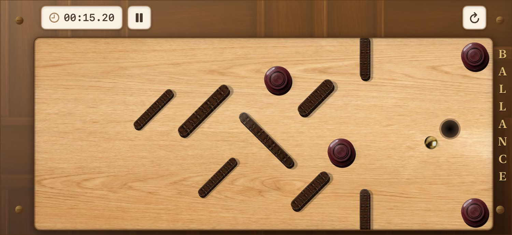
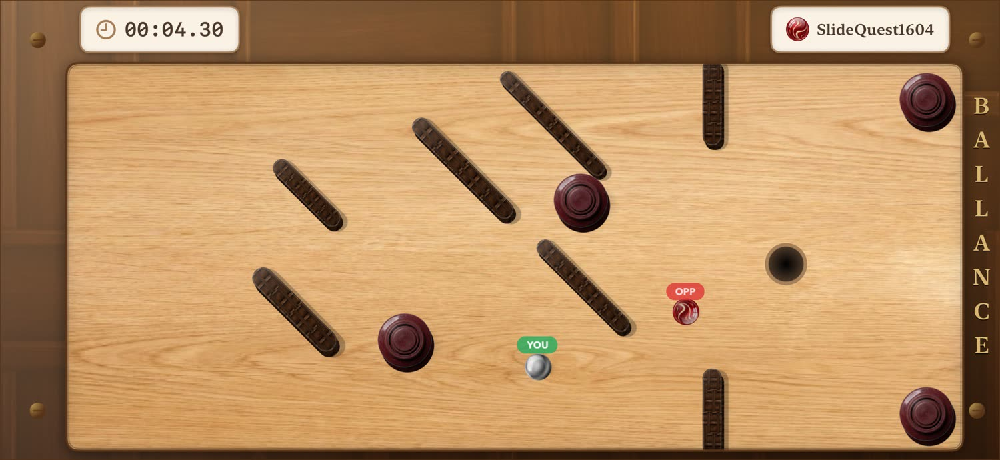
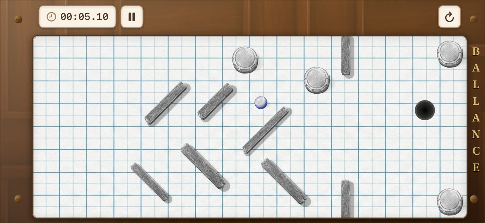
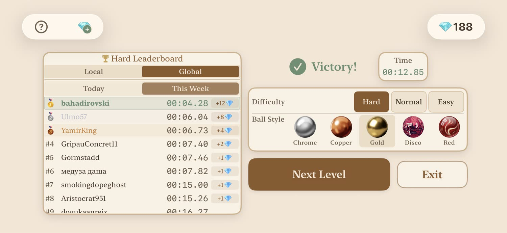

Changing courses
Procedurally changing obstacle layouts keep every attempt sharp and unpredictable.

BallancePrecision · Momentum · Nerves
Roll across a fresh floating course every run. Tilt with precision, dodge what moves, and beat the clock.
Built around the run
Procedurally changing obstacle layouts keep every attempt sharp and unpredictable.
Responsive tilt controls turn small movements into clean, satisfying lines.
Go solo, race online, or challenge a friend nearby on the same network.
Three difficulty levels, daily and weekly leaderboards, 25+ themes, and 19 ball styles.
From the course




Ready when you are
Made for quick runs, hard-earned saves, and one-more-try sessions. Game Center keeps the competition close.
Need a hand?
Found a problem or have an idea for the next course? Send a note and include your device and iOS version when possible.